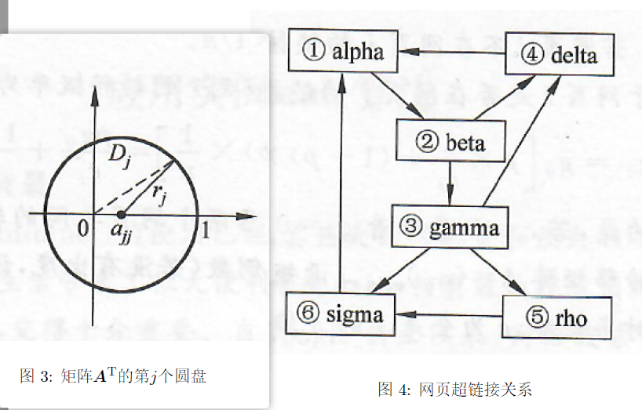

数值分析大作业-PageRank 题目 互联网的使用已经深入人们的日常生活中，其巨大的信息量和强大的功能给人们的生产、生活带来了很大使利。随着网络信息量越来越庞大，如何有效地搜索出用户真正需要的信息变得十分重要。互联网巨头Google公司的核心技术就是通过PageRank 技术对海量的网页进行重要性分析。该技术利用网页相互链接的关系对网页进行组织，确定出每个网页的重要级别(PageRank)。当用户进行搜索时，Google找出符合搜索要求的网页，并按它们的PageRank 大小依次列出。这样，用户一般在显示结果的第一页或者前几页就能找到真正有用的结果。形象地解释，PageRank 技术的基本原理是：如果网页A 链接到网页B ，则认为“网页A投了网页B”一票，而且如果网页A 是级别高的网页，则网页B 的级别也相应地高。
假设 n n n n × n n\times n n × n G = ( g i j ) ∈ R n × n G=(g_{ij})\in\mathbb{R}^n\times n G = ( g ij ) ∈ R n × n j j j i i i g i j = 1 g_{ij}=1 g ij = 1 g i j = 0 g_{ij}=0 g ij = 0 G G G
G G G
第 j j j j j j
第i i i i i i
G G G
记 G G G r i = ∑ i g i j r_i=\sum_ig_{ij} r i = ∑ i g ij i i i
记 G G G c j = ∑ i g i j c_j=\sum_ig_{ij} c j = ∑ i g ij j j j
要计算 PageRank，可假设一个随机上网“冲浪”的过程，即每次看完当前网页后，有两种选择。
在当前网页中随机选一个超链接进入下一个网页。 随机新开一个网页。 这在数学上称为马尔可夫过程(Markov process)。若这样的随机“冲浪”一直进行下去，某个网页被访问到的极限概率就是它的 PageRank。
设 p p p p = 0.85 p=0.85 p = 0.85 1 − p 1-p 1 − p j j j i i i j j j i i i
若网页 i i i j j j p × 1 / c j + ( 1 − p ) × 1 / n p\times1/c_j+(1-p)\times1/n p × 1/ c j + ( 1 − p ) × 1/ n 若网页 i i i j j j ( 1 − p ) × 1 / n . (1-p)\times1/n. ( 1 − p ) × 1/ n . 由于网页 i i i j j j g i j g_{ij} g ij j j j i i i
a i j = g i j [ p × 1 c j + ( 1 − p ) × 1 n ] + ( 1 − g i j ) [ ( 1 − p ) × 1 n ] = p g i j c j + 1 − p n a_{ij}=g_{ij}\left[p\times\frac1{c_j}+(1-p)\times\frac1n\right]+(1-g_{ij})\left[(1-p)\times\frac1n\right]=\frac{pg_{ij}}{c_j}+\frac{1-p}n a ij = g ij [ p × c j 1 + ( 1 − p ) × n 1 ] + ( 1 − g ij ) [ ( 1 − p ) × n 1 ] = c j p g ij + n 1 − p
应注意的是，若 c j = 0 c_j=0 c j = 0 g i j = 0 g_{ij}=0 g ij = 0 a i j = 1 / n a_{ij}=1/n a ij = 1/ n A = ( a i j ) n × n A=(a_{ij})_{n\times n} A = ( a ij ) n × n D D D n n n e e e n n n
A = p G D + e f T A=pGD+ef^\mathrm{T} A = pG D + e f T
其中向量 f f f
f j = { ( 1 − p ) / n , c j ≠ 0 1 / n , c j = 0 , j = 1 , 2 , ⋯ , n f_j=\begin{cases}(1-p)/n,&c_j\neq0\\[2ex]1/n,&c_j=0\end{cases},\quad j=1,2,\cdots,n f j = ⎩ ⎨ ⎧ ( 1 − p ) / n , 1/ n , c j = 0 c j = 0 , j = 1 , 2 , ⋯ , n
设 x i ( k ) , i = 1 , 2 , ⋯ , n x_i^{(k)},i=1,2,\cdots,n x i ( k ) , i = 1 , 2 , ⋯ , n k k k i i i ( ∑ i x i ( k ) = 1 ) (\sum_ix_i^(k)=1) ( ∑ i x i ( k ) = 1 ) x ( k ) \mathbf{x}^{(k)} x ( k ) i i i ∑ j = 1 n = a i j x j ( k ) \sum_{j=1}^n=a_{ij}x_j^{(k)} ∑ j = 1 n = a ij x j ( k ) x ( k + 1 ) = A x ( k ) x^{(k+1)}=\mathrm{Ax}^{(k)} x ( k + 1 ) = Ax ( k )
当这个过程无限进行下去，达到极限情况，即网页访问概率 x ( k ) \mathbf{x}^{(k)} x ( k ) x x x A x = x \mathbf{Ax}=\mathbf{x} Ax = x ∑ i = 1 n x i = 1 \sum_i=1^nx_i=1 ∑ i = 1 n x i = 1
使用幂法计算 PageRank。给定 n × n n\times n n × n G G G p p p x x x
{ A x = x ∑ i = 1 n x i = 1 \begin{cases}\mathrm{Ax}=\mathrm{x}\\\\\sum_{i=1}^nx_i=1\end{cases} ⎩ ⎨ ⎧ Ax = x ∑ i = 1 n x i = 1
易知∥ A ∥ 1 = 1 \parallel A\parallel_1=1 ∥ A ∥ 1 = 1 ρ ( A ) ⩽ 1 \rho(A)\leqslant1 ρ ( A ) ⩽ 1 L = I − A \mathcal{L}=I-A L = I − A det ( I − A ) = 0 \det(\boldsymbol{I}-\boldsymbol{A})=0 det ( I − A ) = 0 1 1 1 A \boldsymbol{A} A A T A^\mathrm{T} A T j j j D j , ( j = 1 , 2 , ⋯ , n ) D_j,(j=1,2,\cdots,n) D j , ( j = 1 , 2 , ⋯ , n ) a j j > 0 a_{jj}>0 a jj > 0 r j r_j r j a j j + r j = 1 a_{jj}+r_j=1 a jj + r j = 1 A T A^\mathrm{T} A T A A A A A A
网页的 PageRank 完全由所有网页的超链接结构决定，隔一段时间重新算一次PageRank，以反映 Internet 的发展变化，此时将上一次计算的结果作为幂法的送代初值可提高收敛速度。由于迭代向量以及矩阵 A A A A A A A x ( k ) Ax^{(k)} A x ( k )
以一个只有6个网页的微型网络作为例子，其网页链接关系如图4所示，利用幂法计算该网络的PageRank。

分析 数学建模 问题目标 ：
求解极限概率分布向量 x \mathbf{x} x A x = x , ∑ i = 1 n x i = 1 \mathbf{Ax} = \mathbf{x}, \quad \sum_{i=1}^n x_i = 1 Ax = x , i = 1 ∑ n x i = 1
所用算法分析 为什么采用幂法？ 幂法是一种高效、可靠的算法，特别适用于 PageRank 的需求：
矩阵 A A A ：A A A 具有主特征值 λ = 1 \lambda=1 λ = 1 ρ ( A ) = 1 \rho(A) = 1 ρ ( A ) = 1 大规模稀疏矩阵的特点 ：G G G 幂法不需要显式存储 A A A A x Ax A x 唯一性与收敛性 ：A A A 对于初始值的选取，算法具有鲁棒性，且可以利用之前的计算结果加速收敛。 物理意义 ：矩阵 A A A 幂法的迭代形式对应于模拟用户浏览过程的多次重复。 幂法的优势： 高效处理大规模数据。 利用稀疏性减少计算量。 可随时间更新 PageRank，以反映互联网结构的动态变化。 思路 要计算这个微型网络的 PageRank，我们需要构建转移矩阵 $ A $，并使用幂法迭代以求得特征值 1 对应的特征向量。下面是具体步骤：
构建链接矩阵 G G G 根据图中的链接关系，构建 $ G $：
G = [ 0 0 0 0 0 0 1 0 0 0 0 0 0 1 0 0 0 0 1 0 1 0 0 0 0 0 1 0 0 0 0 0 1 0 1 0 ] G = \begin{bmatrix} 0 & 0 & 0 & 0 & 0 & 0 \\ 1 & 0 & 0 & 0 & 0 & 0 \\ 0 & 1 & 0 & 0 & 0 & 0 \\ 1 & 0 & 1 & 0 & 0 & 0 \\ 0 & 0 & 1 & 0 & 0 & 0 \\ 0 & 0 & 1 & 0 & 1 & 0 \\ \end{bmatrix} G = ⎣ ⎡ 0 1 0 1 0 0 0 0 1 0 0 0 0 0 0 1 1 1 0 0 0 0 0 0 0 0 0 0 0 1 0 0 0 0 0 0 ⎦ ⎤
出度向量 c c c D D D 计算每个网页的出度 c j c_j c j D D D
c = [ 2 , 1 , 3 , 1 , 1 , 2 ] c = [2, 1, 3, 1, 1, 2] c = [ 2 , 1 , 3 , 1 , 1 , 2 ] D = diag ( 1 / 2 , 1 , 1 / 3 , 1 , 1 , 1 / 2 ) D = \text{diag}(1/2, 1, 1/3, 1, 1, 1/2) D = diag ( 1/2 , 1 , 1/3 , 1 , 1 , 1/2 ) 构造转移矩阵 A A A 转移矩阵 $$ A $$的公式为：
A = p G D + e f T , A = pGD + e f^\mathrm{T}, A = pG D + e f T ,
其中：
p = 0.85 p = 0.85 p = 0.85 e e e f j = 1 − p n f_j = \frac{1-p}{n} f j = n 1 − p c j ≠ 0 c_j \neq 0 c j = 0 f j = 1 n f_j = \frac{1}{n} f j = n 1 c j = 0 c_j = 0 c j = 0 对于 n = 6 n = 6 n = 6 1 − p = 0.15 1-p = 0.15 1 − p = 0.15
f j = { 0.15 6 , 若 c j ≠ 0 , 1 6 , 若 c j = 0. f_j = \begin{cases} \frac{0.15}{6}, & \text{若 } c_j \neq 0,\\ \frac{1}{6}, & \text{若 } c_j = 0. \end{cases} f j = { 6 0.15 , 6 1 , 若 c j = 0 , 若 c j = 0.
计算得到：
f = [ 0.15 6 0.15 6 0.15 6 0.15 6 0.15 6 1 6 ] T . f = \begin{bmatrix} \frac{0.15}{6} & \frac{0.15}{6} & \frac{0.15}{6} & \frac{0.15}{6} & \frac{0.15}{6} & \frac{1}{6} \end{bmatrix}^\mathrm{T}. f = [ 6 0.15 6 0.15 6 0.15 6 0.15 6 0.15 6 1 ] T .
然后计算 A A A
A = 0.85 G D + e f T . A = 0.85 G D + e f^\mathrm{T}. A = 0.85 G D + e f T .
初始概率分布 x ( 0 ) x^{(0)} x ( 0 )
x ( 0 ) = [ 1 6 1 6 1 6 1 6 1 6 1 6 ] T . x^{(0)} = \begin{bmatrix} \frac{1}{6} & \frac{1}{6} & \frac{1}{6} & \frac{1}{6} & \frac{1}{6} & \frac{1}{6} \end{bmatrix}^\mathrm{T}. x ( 0 ) = [ 6 1 6 1 6 1 6 1 6 1 6 1 ] T .
通过迭代公式：
x ( k + 1 ) = A x ( k ) , x^{(k+1)} = Ax^{(k)}, x ( k + 1 ) = A x ( k ) ,
不断更新 x x x x ( k + 1 ) x^{(k+1)} x ( k + 1 ) x ( k ) x^{(k)} x ( k )
算法设计及其详细描述 输入 网页链接矩阵 G G G 阻尼因子 p p p p = 0.85 p=0.85 p = 0.85 停止阈值 ϵ \epsilon ϵ 输出 各网页的 PageRank 值向量 x \mathbf{x} x
步骤 初始化 ：构造初始概率分布向量 x ( 0 ) \mathbf{x}^{(0)} x ( 0 ) x i ( 0 ) = 1 n x_i^{(0)} = \frac{1}{n} x i ( 0 ) = n 1 构造转移矩阵 ：根据 G G G A A A 若 c j > 0 c_j > 0 c j > 0 a i j = p g i j c j + 1 − p n a_{ij} = \frac{pg_{ij}}{c_j} + \frac{1-p}{n} a ij = c j p g ij + n 1 − p 若 c j = 0 c_j = 0 c j = 0 a i j = 1 n a_{ij} = \frac{1}{n} a ij = n 1 迭代更新 ：使用公式 x ( k + 1 ) = A x ( k ) \mathbf{x}^{(k+1)} = \mathbf{A} \mathbf{x}^{(k)} x ( k + 1 ) = A x ( k ) 可以直接用超链接关系计算 A x ( k ) \mathbf{Ax}^{(k)} Ax ( k ) A A A 收敛判断 ：若满足 ∣ x ( k + 1 ) − x ( k ) ∣ 1 < ϵ |\mathbf{x}^{(k+1)} - \mathbf{x}^{(k)}|_1 < \epsilon ∣ x ( k + 1 ) − x ( k ) ∣ 1 < ϵ 归一化 ：确保最终向量 x \mathbf{x} x 输出结果 ：x \mathbf{x} x 实现 1 2 3 4 5 6 7 8 9 10 11 12 13 14 15 16 17 18 19 20 21 22 23 24 25 26 27 28 29 30 31 32 33 34 35 36 37 38 39 40 41 import numpy as npdef pagerank (G, p=0.85 , tol=1.0e-6 , max_iter=1000 ): n = G.shape[0 ] c = np.sum (G, axis=0 ) D = np.diag(1 / np.where(c != 0 , c, 1 )) f = np.where(c != 0 , (1 - p) / n, 1 / n) A = p * G @ D + np.outer(np.ones(n), f) x = np.ones(n) / n for _ in range (max_iter): x_new = A @ x if np.linalg.norm(x_new - x, 1 ) < tol: break x = x_new return x G = np.array([ [0 , 0 , 0 , 1 , 0 , 1 ], [1 , 0 , 0 , 0 , 0 , 0 ], [0 , 1 , 0 , 0 , 0 , 0 ], [0 , 1 , 1 , 0 , 0 , 0 ], [0 , 0 , 1 , 0 , 0 , 0 ], [0 , 0 , 1 , 0 , 1 , 0 ], ], dtype=np.float64) pagerank_values = pagerank(G) print ("PageRank 值:" , pagerank_values)
PageRank 值: [0.26752787 0.25239904 0.13226969 0.16974598 0.06247629 0.11558113]
参考代码来源：
《Introduction to Algorithms》（算法导论）中的 Markov Chain 相关章节。 Python 机器学习库 networkx 的 PageRank 实现。 可能的改进方向 稀疏矩阵优化 ：使用 scipy.sparse 或其他稀疏矩阵工具对 G G G A A A 利用稀疏矩阵的特性（非零元素远小于总数），通过稀疏矩阵乘法显著减少计算时间和内存需求。 引入非均匀随机跳转 ：改进随机跳转向量 f f f 优化幂法 ：使用加速收敛方法，如：加速幂法 （Accelerated Power Method）：通过动态调整步长加速收敛。Arnoldi 方法 或Lanczos 方法 ：适用于求解大规模稀疏矩阵的特征向量。 对幂法的初始值选择，使用历史 PageRank 结果作为初值以减少迭代次数。 并行化与分布式计算 ：对大规模数据集，使用并行处理（如 GPU、CUDA）或分布式框架（如 Apache Spark）。 将矩阵分块，结合分布式存储与计算进行大规模矩阵运算。 孤立节点处理 ：对孤立节点加入动态权重分配模型，而不是固定的均匀分布 1 / n 1/n 1/ n 结合网络图的聚类算法，为孤立节点分配更合理的跳转概率。 高效存储与更新机制 ：对于动态变化的互联网结构，使用增量计算方法，仅更新发生变化的部分网页链接。 引入 动态 PageRank 算法，减少全局重新计算的频率。 结合用户行为数据 ：将实际用户点击流数据引入模型（如用户访问的统计概率）。 改进 Markov 转移矩阵 A A A